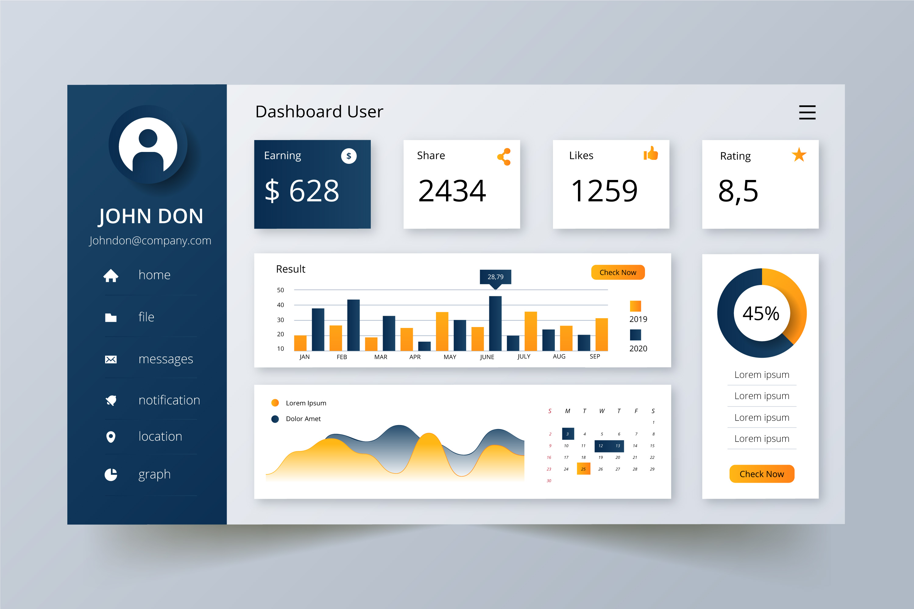

Projetos em Destaque
Cada projeto foi pensado para resolver um problema real de forma eficiente — seja por meio da integração de sistemas, da inteligência artificial ou de dashboards personalizados.
Explore os exemplos abaixo e veja como posso ajudar sua empresa a ganhar tempo, reduzir custos e tomar decisões com mais clareza.

Neste relatório é possível visualizar todos os dados mensais e anuais de forma ágil para observar a situação da empresa e auxiliar na tomada de decisões.
Robô digital que automatiza a geração de relatórios semanais com envio por e-mail e whatsapp.
×


×


×